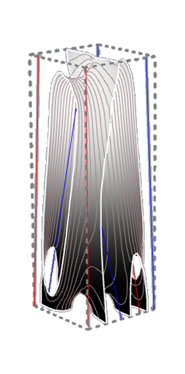
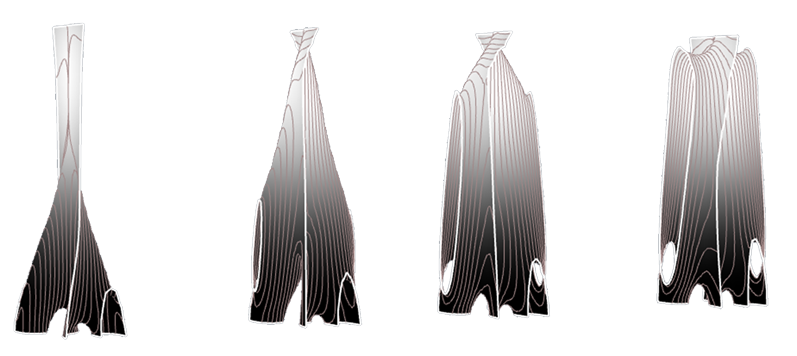

This workshop was about studing Minimal surfaces and creating diffrent version of them by using mainly Grasshopper
and Milipade we also used several plugins to improve our outcome mesh.
tutor of the workshop was Mehrad Mahnia.
▾


In this methode for creating minimal surface
we actually design the curves in order to
create the mesh surface in a bounding box.
we have two groups curve to make the surface
in middle of them in a space that we defines
as a box.
▾

We recored our process to achive our form becuase in this kind of design actually the process
is the valuble thing that people achive.
Back to timeline